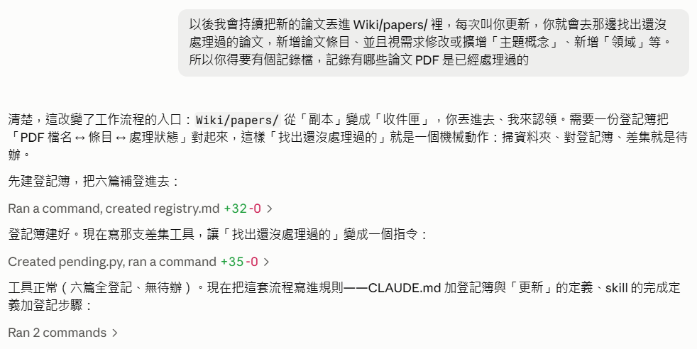
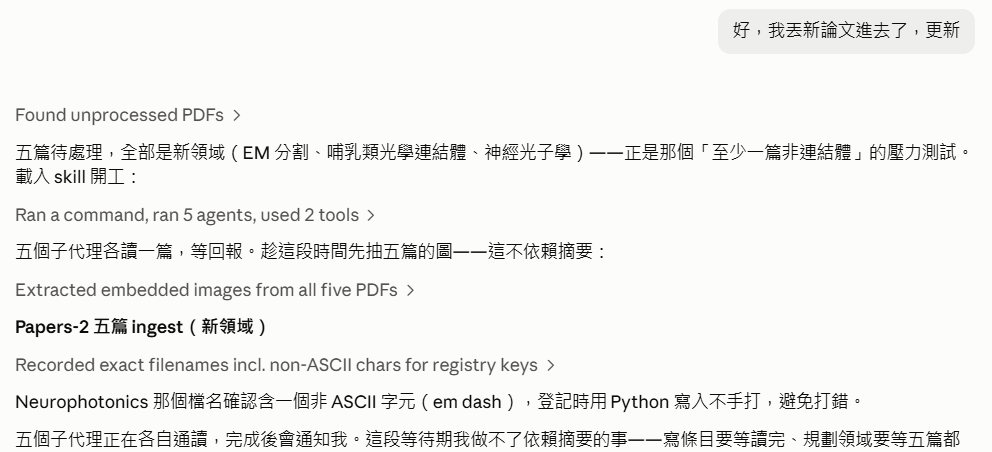
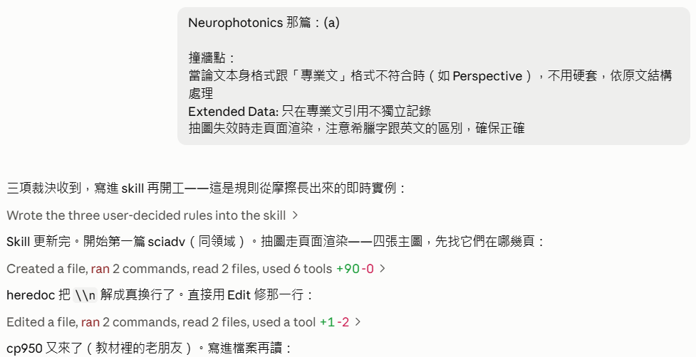
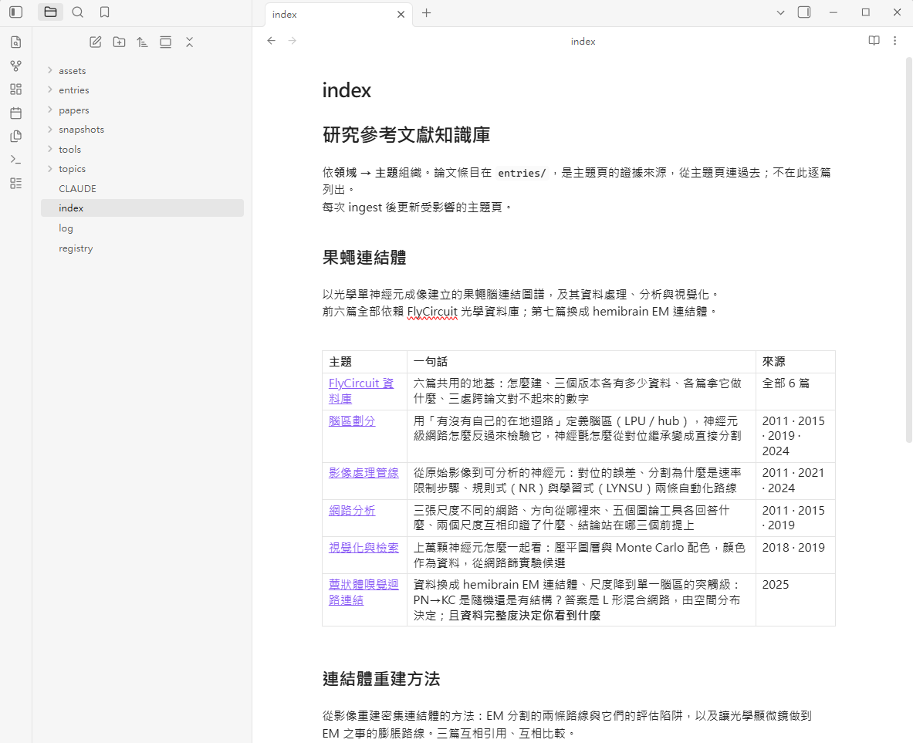
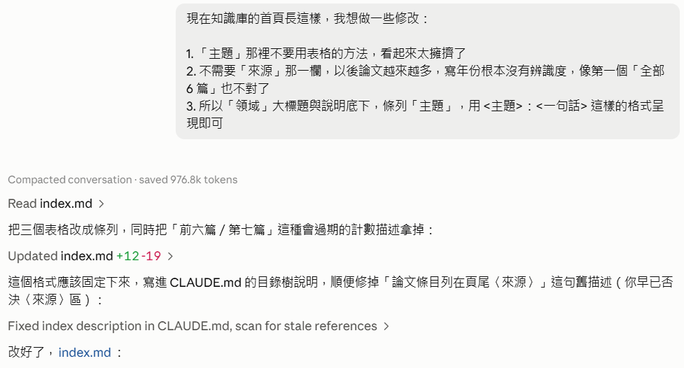
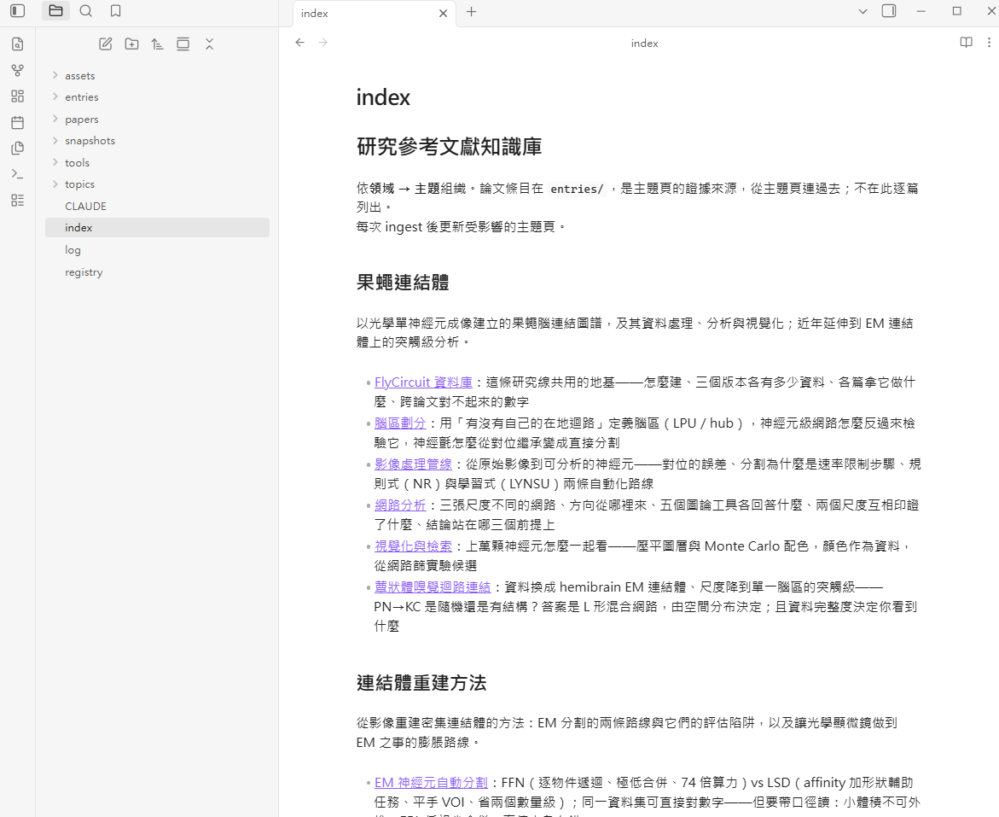
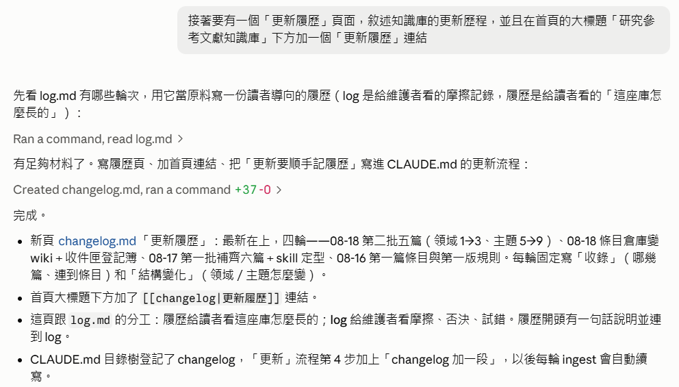
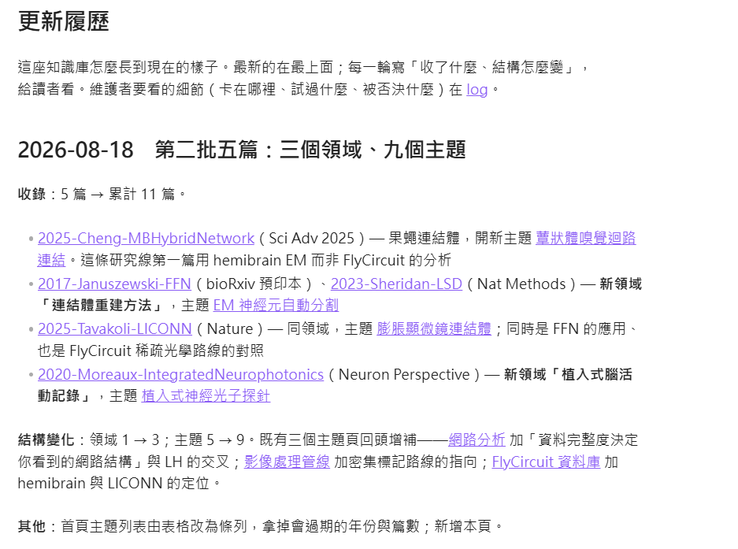
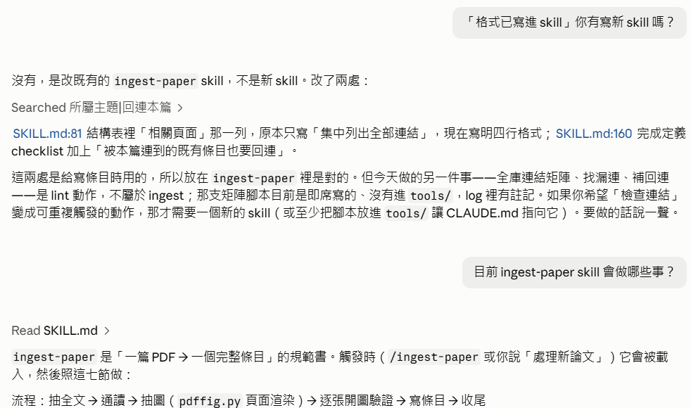

把條目倉庫變成知識庫
上一集寫好了規則書，也用它產出六篇論文條目。但六個檔案放在資料夾裡， 不叫知識庫——那叫倉庫。這一集把它變成真正的 wiki：領域、主題、條目三層各就各位， 新論文丟進去就能被吸收，頁面之間彼此連得到。
 播放教學影片 · 11 分 36 秒 · 在 YouTube 開啟 ↗
播放教學影片 · 11 分 36 秒 · 在 YouTube 開啟 ↗
怎麼讀這一頁
先別動手：看清楚現況
這是現在知識庫的樣子，看起來只是「論文列表」，然後「連結到各論文條目頁面」。我想要把它變成 wiki 的樣子，index 應該是「領域→主題概念」，領域以目前的內容而言，可能只有「果蠅連結體」而已，而「主題概念」可以從現有六篇論文中萃取出來。
告訴我你打算怎麼做，先別動手
- 沒有立刻提方案。第一個動作是把六篇條目裡已經埋下的
[[連結]]全部掃一遍， 看哪些概念被幾篇連到、彼此怎麼交錯——它說這是「規劃的依據，不是動手」。 - 掃完的結論：六篇裡已經有 9 個待寫的概念連結（FlyCircuit 六篇都連、LPU 四篇、標準腦與影像對位四篇……）。 主題不是憑空發明的，是寫條目時自然浮出來的。
- 然後提出計畫：三層——領域 index → 主題頁（5 個，是「地圖」）→ 概念頁（約 11 個，是「條目」）→ 論文頁不動。


- 計畫的其餘部分：五個主題各講什麼——FlyCircuit 資料庫（六篇共用的地基）、腦區劃分（LPU／hub 的定義與檢驗）、影像處理管線（對位、分割、追蹤）、網路分析（三張尺度不同的網路）、視覺化與檢索。這五個名字之後一個都沒改。
- 約 11 個概念頁候選（FlyCircuit、LPU、標準腦與影像對位、rich club、small world、模組化分析、SPIN 極性預測、中尺度連結體、hemibrain……），每個附一句定義；論文頁不動。
- index 的改法：領域 → 主題各一行；論文列表降級到頁尾。
- 最後停下來列出「兩個要你先裁決的」——見下一步。
兩件事要你裁決
計畫的最後，它自己停下來，列出兩個不該由它決定的問題：
- 「果蠅連結體」這個領域名對不對——六篇裡有三篇是工具論文，叫「果蠅連結體」簡潔、叫「果蠅腦影像與連結體」誠實。
- 概念清單誰決定——那 11 個是它從連結裡抽的，但「hub 要不要獨立成頁還是併進 LPU」這種事需要領域直覺。 它自己說：「概念清單是人審過的，不是 Agent 全權決定的。」
1. 維持「果蠅連結體」，因為以後這個知識庫還會繼續擴增，到時候再看是否拆分、合併或修改
2. 我覺得目前還是兩層就好，現在的內容用你列出的 5 個主題即可。每個主題用「科普文」的風格來寫，至少 1500 字，不設字數上限。一樣請用白話、直接的敘事方式，言簡意賅，廢話不要太多，形容詞只用在客觀的比較、評價上，不要太浮濫或煽情，這是我自己要讀的，沒有要騙流量
3. 日後繼續擴充時，如果有些主題需要擴充到三層，再個別處理，以後再說
4. 另外，各論文的頁面是不是應該另開目錄來放，不要全部丟在 Wiki/ 的根目錄裡

index.md（領域 → 五個主題各一行）＋ topics/。- 把四點裁決整理成執行計畫：兩層目錄樹——
index.md（領域 → 五個主題各一行）、topics/五頁（當時還打算用中文檔名）；主題頁規格：科普文、1,500 字起、每頁末尾〈相關主題〉互連。 - 對第 4 點提出選擇：A. 條目搬進
papers/與原始 PDF 同住；B. 另開目錄。並問主題頁檔名要中文還是英文。 - 明說暫時不動的：概念頁（第三層）依你的裁決不建，那 9 個
[[概念]]連結保留為懸空，是日後的候選。
條目搬家，試點一頁
對第 4 點它問了一個選擇題：論文條目要搬進哪裡——A. papers/（跟原始 PDF 放一起）還是 B. 另開目錄？
它同時提出主題頁檔名要用中文還是英文。
關於 4，不是放進 Wiki/papers/，那是原始資料，而是另外開一個來放 md 檔，所以答案是 B。主題頁檔名還是用英文，免得誤解專業術語
- 開
entries/，六篇條目搬進去。Obsidian 的[[頁名]]依檔名解析、不看路徑， 所以 74 個條目間的互連一個都不用改；只有條目內的圖片路徑（assets/→../assets/，34 處） 和 PDF 連結（6 處）要修。改完跑腳本驗證全庫連結。 - 不是五頁一起寫，先寫一頁試點：
topics/flycircuit-database.md，約 2,200 字。 寫完把「這一頁的寫法」講出來給你看——七節的結構、風格（形容詞只出現在客觀判斷）、數字全部連回條目。

- 搬家的驗證結果：74 個條目間互連一個不用改；圖片路徑 34 處、PDF 連結 6 處改完；跑一遍全庫連結，零壞連結。
- 試點頁的七節：它是什麼 → 怎麼建起來的（三個技術＋driver 偏差）→ 三個版本的資料量表 → 各篇論文拿它做什麼（建／用／做工具）→ 三處對不起來的數字 → 資料的邊界 → 相關主題。
- 這一頁比六篇條目多出來的東西：版本對照表、41／43 LPU 與 28,573 計數的跨論文對照、driver 偏差如何一路傳到 2019 年的 rich club 結論——單看任何一篇都看不到。
- 末尾問：「這個樣子 OK 嗎？OK 我就照這個寫其餘四頁。」
領域 → 主題：新首頁
可以，繼續做完
- 照試點的樣子寫完另外四頁：
brain-region-parcellation、image-processing-pipeline、network-analysis、visualization-and-retrieval。每頁 2,000–2,600 字， 檔頭四欄（title／domain／sources／tags）——sources列出這頁引用的條目，是日後反查「哪些主題該更新」的依據。 - index 改成「領域 → 主題」的表：每個主題一句話、來源哪幾篇。論文列表從首頁消失。
- 回頭改規則：CLAUDE.md 加一條「ingest 一篇論文要動的不只一頁——寫條目、還要回頭更新受影響的主題頁」； skill 的完成定義加一項「主題頁已更新，做完才算 ingest 完成」。
- 你隨後補了兩個小修正：首頁檔頭有兩個「Index」，要它取個好名字（→「研究參考文獻知識庫」）； 頁尾的「來源」區塊不要（以後會長太大）。

- 完工回報：四頁各 2,000–2,600 字；每頁末尾〈這個主題還沒解決的事〉集中各條目的疑點，是下一輪 lint 的起點；五頁互連。
- 規則同步：CLAUDE.md 目錄樹加
topics/、entries/；新增「ingest 要回頭更新受影響的主題頁」；skill 完成定義加一項。log 記下「五個主題是從六篇的待寫連結反推出來的」。 - 你隨後兩點：首頁兩個「Index」→ 它提了幾個名字，定為「研究參考文獻知識庫」；頁尾「來源」區塊拿掉——首頁不列論文，條目的入口是主題頁。這一條也進了 skill 的完成定義（「index 不逐篇列條目」）。
收件匣與登記簿
以後我會持續把新的論文丟進 Wiki/papers/ 裡，每次叫你更新，你就會去那邊找出還沒處理過的論文，新增論文條目、並且視需求修改或擴增「主題概念」、新增「領域」等。所以你得要有個記錄檔
- 先講清楚這改變了什麼：
Wiki/papers/從「副本」變成「收件匣」——你丟進去、它來認領。 「找出還沒處理過的」要變成一個機械動作：掃資料夾、對登記簿、差集就是待辦。 - 建
registry.md：六篇補登進去。比對鍵是 PDF 檔名一字不差；每列記條目名、領域、影響的主題、日期。 另設一張「略過」表——刻意不處理的也要登記，否則每次都會被當成待辦。 - 寫
tools/pending.py：掃papers/對registry.md，印出差集；順便警告「登記簿有、磁碟沒有」的檔案。跑一次：六篇全登記、無待辦。 - 把流程寫進規則：CLAUDE.md 新增〈「更新」的定義〉四步（pending → 每篇載入 skill → 立刻登記 → log）， 以及「新領域的判斷」；skill 完成定義加「登記」一項。
- 它還問了一個問題：鐵則 1 原本說原始資料在專案根目錄的
Papers/，現在收件匣是Wiki/papers/—— 鐵則要改指哪裡？你選 A：Wiki/papers/就是唯一來源，唯讀原則不變。

- 登記簿的欄位：PDF 檔名（比對鍵）、條目、領域、影響的主題、處理日期；「略過」表：檔名、理由、日期。
- CLAUDE.md 新增的〈「更新」的定義〉：1.
pending.py差集 2. 每篇載入 skill（寫條目 → 更新主題頁 → 需要時開新主題、新領域） 3. 每篇做完立刻登記——「這一步漏了，下次它會再被當成待辦」 4. log 記摩擦。加上「新領域的判斷」：接不上任何主題就開新領域，領域名先用最直白的。 - 鐵則 1 的問題：原本指向專案根目錄的
Papers/，現在收件匣是Wiki/papers/——A. 改指Wiki/papers/為唯一來源；B. 兩者並列。你選 A。唯讀原則不變：對收件匣只讀不寫、只登記。
這一步寫的程式
- Wiki/tools/pending.py
- 掃
papers/、對registry.md裡反引號括起的 PDF 檔名，印出未登記的差集； 登記簿有而磁碟沒有的檔案另外警告。 - Wiki/registry.md
- 不是程式，是資料——但它是
pending.py的另一半。兩張表：已處理、略過。
壓力測試：五篇新論文
好，我丟新論文進去了，更新
- 跑
pending.py：五篇待處理。快速翻過檔名與摘要就知道——全部不在原本的「果蠅連結體」裡 （EM 分割、哺乳類光學連結體、神經光子學）。它自己點名：這正是上一集留下的那個條件——「skill 要等一篇非連結體領域的論文來檢驗」。 - 不是一篇一篇硬讀。開五個子代理各通讀一篇、回報結構化摘要——五篇合計六十幾萬字元， 不進主上下文。等待期間先做不依賴摘要的事：抽五篇的圖、把五個 PDF 檔名一字不差記下來當登記鍵 （Neurophotonics 那篇檔名裡有一個 em dash，它特別註記「登記時用 Python 寫入不手打」）。
- 五份摘要回來後才規劃：五篇不是「五個新領域」，是三件事——一篇同領域新主題（蕈狀體，資料換 EM）、 三篇一個新領域兩個主題（EM 分割 ＋ 膨脹顯微鏡連結體）、一篇獨立領域（植入式記錄）。你確認後才逐篇 ingest。

- 等待子代理期間先抽圖，結果很差：FFN 只抽到 3 張、LICONN 抽到 92 張碎片、Neurophotonics 的向量圖抽不到——決定全部改走頁面渲染。
- 五份摘要回來後的判讀：五篇不是「五個新領域」，是三件事——sciadv（蕈狀體 PN→KC，同領域新主題、資料換 EM）；FFN＋LSD＋LICONN（互相引用、LICONN 用 FFN，一個新領域兩個主題）；Neurophotonics Perspective（跟所有東西無關）。
- 提出三個要你裁決的問題：Neurophotonics (a) 獨立成領域 或 (b) 掛在連結體底下；Nature 系列 Extended Data 十張要不要三層記錄；抽圖失效的處理。等你回覆才開工。
規則在撞牆的當下就寫
五份摘要回來後，它把三個要你裁決的問題一起提出：Neurophotonics 那篇是 Perspective（觀點文），沒有方法、結果—— 獨立成一個領域，還是掛在連結體底下？Nature 系列的 Extended Data 圖十張，要不要每張三層記錄？ 以及抽圖工具在這五篇幾乎全部失效（FFN 只抽到 3 張、LICONN 抽到 92 張碎片）。
Neurophotonics 那篇：(a)
撞牆點：
當論文本身格式跟「專業文」格式不符合時（如 Perspective），不用硬套，依原文結構處理
Extended Data: 只在專業文引用不獨立記錄
抽圖失效時走頁面渲染，注意希臘字跟英文的區別，確保正確
- 三項裁決先寫進 skill，再開工。它自己說這是「規則從摩擦長出來的即時實例」。
- 開始第一篇（sciadv，同領域）。抽圖走頁面渲染，寫了一支新工具
pdffig.py：依圖說位置找圖頁、裁圖區、把文字層的 panel 字母與圖例一起渲染進去。 - 途中兩個老朋友：heredoc 把
\n解成真換行（改用 Edit 修那一行）、Windows cp950 編碼錯誤（改寫進 UTF-8 檔案）。 它一句「教材裡的老朋友」帶過，沒有停下來。 - 後面四篇的抽圖也各有狀況：bioRxiv 早期版的文字層每個空格帶零寬空格、Neuron 的圖說在圖上方——工具的自動判斷失敗，改手動指定頁碼裁圖。 它把這些寫進 skill：「找圖說頁這一步無法完全自動化，渲染後逐張開圖確認仍是必要步驟」。

ran 是失敗的指令，它各用一句話說明改法。- sciadv 的四張主圖走頁面渲染，逐張開圖確認 panel 字母與圖例都在；條目
2025-Cheng-MBHybridNetwork寫完立刻登記；回頭在network-analysis加一節「從 EM 連結體看回來」。 - 兩篇之後把手動的「找圖說頁 → 裁圖區 → 併入文字層」包成
pdffig.py；實測五篇：三種排版能自動，bioRxiv 早期版（每個空格帶零寬空格 U+200B）與 Neuron（圖說在圖上方）需手動指定頁碼——「找圖說頁這一步無法完全自動化」寫進 skill。 - Neurophotonics 的文字層錯得最系統性：µ→m 幾十處、Δ→D、Φ→4、×→3、負號與上標遺失——每個單位對照渲染圖還原；條目〈疑點〉列了 12 處內部不一致。
這一步寫的程式
- Wiki/tools/pdffig.py
- 以頁面渲染抽主圖：搜圖說找圖頁、裁圖區、併入文字層字母與圖例。Sci Adv／Nature／Nat Methods 排版可自動；
bioRxiv（零寬空格）與圖說在上方的排版需手動指定頁碼。已登記進 CLAUDE.md 工具表與 skill，取代
pdfimg.py成為優先工具。
三個領域、九個主題
- 五篇逐一 ingest：每篇寫完立刻登進 registry.md——不等全部做完。這是第 05 步規則書寫的「這一步漏了，下次它會再被當成待辦」。
- 四個新主題頁：
mushroom-body-connectivity（果蠅連結體底下）、em-neuron-segmentation與expansion-microscopy-connectomics（新領域「連結體重建方法」）、implantable-neurophotonics（新領域「植入式腦活動記錄」）。 - 三個既有主題頁回頭改內文：網路分析加「資料完整度決定你看到的網路結構」（新論文的下採樣實驗，可回頭檢驗 2019 年那篇 TPR 0.40 的部分圖）； 影像處理管線加密集標記路線的指向；FlyCircuit 資料庫加 hemibrain 與 LICONN 的定位。這就是第 04 步那條規則的實際執行。
- index 加兩個領域區塊；CLAUDE.md 的領域描述從「一個領域五個主題」改成三個領域；log 記這一輪的摩擦。
- 五篇之間也長出交叉：hemibrain 連結體是 FFN 分割的產物、LSD 與 FFN 用同一資料集可直接對數字、LICONN 用 FFN—— 兩個領域之間有實質的線，不是硬湊在一起的。

entries/、topics/、registry。
表格第六列「蕈狀體嗅覺迴路連結」是同領域的新主題；再往下捲是兩個新領域。
「前六篇全部依賴 FlyCircuit；第七篇換成 hemibrain」這句，下一步會被拿掉。- 完工回報的表：五篇條目各自的落點——Cheng 2025 → 果蠅連結體新主題；FFN 2017（bioRxiv 預印本，明標）與 LSD 2023 → 新領域「連結體重建方法」；LICONN 2025 → 同領域另一主題，同時是 FFN 的應用、也是 FlyCircuit 稀疏路線的對照；Moreaux 2020 → 新領域「植入式腦活動記錄」。
- 收穫四點：五篇讀完再規劃比邊做邊猜穩；三條裁決已進 skill；
pdffig.py已登記進 CLAUDE.md 工具表與 skill；文字層符號錯誤擴寫進鐵則 3 的說明。 - 兩件請你看：
2025-Cheng-MBHybridNetwork是你們實驗室的論文，批判層（單一個體、一維分群、模擬極簡、行為相關的循環風險）你最有資格判斷；skill 的領域中立這次才真的被三個領域測過。
首頁太擠：表格改條列
現在知識庫的首頁長這樣，我想做一些修改：
1. 「主題」那裡不要用表格的方法，看起來太擁擠了
2. 不需要「來源」那一欄，以後論文越來越多，寫年份根本沒有辨識度，像第一個「全部 6 篇」也不對了
3. 所以「領域」大標題與說明底下，條列「主題」，用 <主題>：<一句話> 這樣的格式呈現即可
- 三個表格改成條列，格式統一為
[[主題]]：一句話。 - 不只拿掉「來源」欄——順手把說明段裡「前六篇全部依賴 FlyCircuit；第七篇換成 hemibrain」和「六篇共用的地基」也改成不帶計數的說法。 同一個道理：論文一多，這些數字就過期。
- 把這個格式寫進 CLAUDE.md 目錄樹對 index 的描述：「每個領域一段說明，底下條列『[[主題]]：一句話』；不列論文、不寫年份計數」。 順便發現舊描述還寫著「論文條目列在頁尾〈來源〉」——那是第 04 步你已經否決的設計，一併修掉。

index.md 重新確認現況再改。
最後一行「這個格式應該固定下來，寫進 CLAUDE.md」是它自己加的。
- 三個領域區塊全改條列；主題名後面用「：」，所以一句話裡原本的冒號改成破折號，避免撞在一起。
- 拿掉的不只「來源」欄：果蠅連結體說明句「前六篇全部依賴 FlyCircuit；第七篇換成 hemibrain」→「近年延伸到 EM 連結體上的突觸級分析」；FlyCircuit 一句話「六篇共用的地基」→「這條研究線共用的地基」。
- 掃了主題頁與 skill 有沒有殘留「〈來源〉」「全部 6 篇」之類的舊描述——沒有；CLAUDE.md 目錄樹對 index 的描述改成「每個領域一段說明，底下條列『[[主題]]：一句話』；不列論文、不寫年份計數」，「ingest 要加進 index 的〈來源〉」那句也一併改掉。
更新履歷
接著要有一個「更新履歷」頁面，敘述知識庫的更新歷程，並且在首頁的大標題「研究參考文獻知識庫」下方加一個「更新履歷」連結
- 先看
log.md有哪些輪次，用它當原料——它區分了兩種紀錄的角色：log 是給維護者看的摩擦記錄，履歷是給讀者看的「這座庫怎麼長的」。 - 寫
changelog.md：最新在上，每一輪固定寫「收錄」（哪幾篇、連到條目）和「結構變化」（領域／主題怎麼變）。開頭一句話說明分工並連到 log。 - 首頁標題下方加
[[changelog|更新履歷]]；CLAUDE.md 目錄樹登記 changelog， 「更新」流程第 4 步加上「changelog 加一段」——以後每輪 ingest 會自動續寫，不用你再提醒。


- 履歷的四輪（當時）：08-18 第二批五篇（領域 1→3、主題 5→9）；08-18 條目倉庫變 wiki＋收件匣登記簿；08-17 第一批補齊六篇＋skill 定型；08-16 第一篇條目與第一版規則。每輪固定「收錄」與「結構變化」兩欄。
- 目錄樹的兩行改成一組對照：
changelog.md「給讀者看的成長史」、log.md「給維護者看的摩擦記錄」。 - 後續修正：首頁改條列與連結補全是 08-19 的事，從 08-18 那輪拆出來成獨立一輪——「履歷的日期要對，否則它就只是另一份 log」。
把連結做完整
檢查所有的頁面，把彼此的超連結做完整（我看了一下目前的狀態，還能有更多連結）
- 先做一張連結矩陣——主題→主題、主題→條目、條目→主題、條目→條目——看誰連了誰、誰該連但沒連。不憑印象補。
- 矩陣揭露三類缺口：六篇早於主題頁寫成的條目完全沒有連回主題頁（它們的〈相關頁面〉只有概念候選與其他條目——「先有條目後長主題」的必然遺留）； 主題頁之間幾組漏連（腦區劃分↔蕈狀體、網路分析↔視覺化）；條目間反向連結缺（hemibrain 是 FFN 分割的產物——FFN 條目連了 Cheng，Cheng 條目沒連 FFN）。
- 要寫「為什麼相關」的一句話，所以先抓每篇條目正文裡提到其他條目的上下文，確保理由對得上原文；然後兩支腳本批次改 11 篇條目與 9 個主題頁。
- 條目的〈相關頁面〉定型為四行：所屬主題／另見主題／相關條目（每條附一句為什麼相關）／概念。改完重跑矩陣驗證，沒有壞連結。
- 刻意保留幾組單向連結（例如 Perspective 那篇對 Kaleido 的「引用陷阱」只從一邊連過去）——它說：「對稱不是目標，讀者從任一端出發都找得到路才是。」

- 矩陣改前的數字：六篇舊條目連回主題頁 0 個；改後每篇 3–7 個。主題頁之間從每頁 2–6 個升到 4–8 個。
- 正文加的實質連結：Cheng 的 hemibrain 標明「由 FFN 分割，見 [[2017-Januszewski-FFN]]」；2011／2015／2019 的〈未來〉指向 Cheng 與 LICONN；2019 加「以 NR 重建網路看 TPR 是否改變」；首頁加登記簿連結。
- 兩個判斷、明說可推翻：概念候選連結（FlyCircuit、LPU、rich club、hemibrain 等 11 個）維持懸空——是你先前裁定的第三層待寫標記，只在概念行加註「內容目前在所屬主題頁裡」；刻意保留幾組單向連結。第二輪又補回四組值得對稱的（2015↔2021、2024↔FFN、LICONN↔Kaleido、網路分析→植入式記錄）。
- 格式寫進 skill（〈相關頁面〉四行＋「被連到的既有條目也要回連」）；log 記一筆、履歷加一段。
Skill 的邊界
「格式已寫進 skill」你有寫新 skill 嗎？
沒有——是改既有的 ingest-paper，兩處：結構表裡「相關頁面」那一列，和完成定義 checklist。
它接著自己劃了一條線：這兩處是寫條目時用的，放在 ingest-paper 裡是對的；
但今天做的另一件事——全庫連結矩陣、找漏連——是 lint 動作，不屬於 ingest，那支矩陣腳本目前是即席寫的、沒有進 tools/。
如果要「檢查連結」變成可重複觸發的動作，那才需要一個新的 skill。
目前 ingest-paper skill 會做哪些事？
讀 SKILL.md，一張表列出七節各管什麼（工具、檔名與 frontmatter、標題區、固定結構、圖、數字與公式、批判層、完成定義），
並說明它不做的：找待處理的 PDF（那在 CLAUDE.md 的「更新」流程）、全庫 lint。
然後主動指出一個缺口：主題頁該怎麼寫沒有寫在任何規則裡——那次是試點一頁你看過定調的，寫法只留在 log。下一輪 ingest 要開新主題，會靠記憶。
更新的部分有放在這個 skill 裡嗎？
「更新」分兩層：入口（pending → 迴圈 → 登記 → 履歷）在 CLAUDE.md，因為每一輪都要在場； 每一篇怎麼處理（寫條目 → 更新主題頁 → 登記 → log）在 skill，因為只在寫條目時載入。 registry 兩邊都寫——重複但無害，這一步漏了代價高。changelog 只在 CLAUDE.md——履歷是「一輪」的事，不是「一篇」的事。
你說「好」，它把主題頁寫法補成 skill 第七節（檔名、四欄檔頭、科普文風格、末尾兩節、index 格式），完成定義順延為第八節並指過去。

- skill 七節各管什麼（一張表）：工具／檔名與 frontmatter／標題區／固定結構八區塊／圖的三層與六條驗證／數字與公式／批判層三分類與跨論文警覺／完成定義 13 項。不做的：找待處理 PDF、主題頁寫法、全庫 lint。
- 「更新」的兩層：入口在 CLAUDE.md、每篇收尾在 skill；registry 兩邊都寫（重複但無害）；changelog 只在 CLAUDE.md；新領域／新主題的判斷只在 CLAUDE.md 一段話——主題頁怎麼寫沒有規範，是缺口。
- 你說「好」之後補的第七節：檔案（
topics/英文 kebab-case、四欄檔頭、sources反查用）、寫法（科普文、1,500 字起、多出來的東西才是存在理由、開頭引言、末尾〈還沒解決的事〉與〈相關主題〉、更新既有頁改內文不只加連結）、index 格式（不寫年份篇數）。完成定義順延為第八節並指過去；skill 的 description 加「主題頁的新開與更新」。
這一集學到什麼
上一集的產出是規則書和六篇條目。這一集回答的是：有了條目，然後呢？
答案是三件事：長出中間層（主題頁）、定義「更新」（收件匣 → 登記簿 → 每篇動不只一頁）、 讓頁面彼此連得到。做完這三件，它才從一堆檔案變成一座 wiki。
關於建 wiki 的三個觀察
- 結構是人定的Agent 提三層、量連結、列選項；兩層還是三層、領域叫什麼、文風怎麼寫，是你裁決的。 「先別動手」讓這些裁決發生在產出之前。
- 「更新」要有定義收件匣、登記簿、差集工具、四步流程，寫進每輪都在場的規則書—— 之後「更新」兩個字就能啟動整條流程。而 ingest 一篇論文要動的不只一頁，這是倉庫與 wiki 的分水嶺。
- 改一次頁面是修現況，改規則書才是修未來首頁改條列、加履歷頁、連結四行格式——每一次 Agent 都順手把格式寫進 CLAUDE.md 或 skill。 不寫，下一輪就長回原樣。
關於你的角色
這一集你做的事：叫它先別動手、裁決結構、定義「更新」、丟五篇論文進去測、 看首頁不順眼就改、追問「你有寫新 skill 嗎」。
Agent 做的事更多——掃連結、寫九個主題頁、五篇 ingest、寫兩支工具、做連結矩陣。但每一個結構性的決定都是你下的， 而且都下在它動手之前。上一集的關鍵動作是提問，這一集是裁決。
這一集的產出
| 項目 | 狀態 | 內容 |
|---|---|---|
| Wiki/topics/ | 新增 | 9 個主題頁，三個領域；英文檔名、四欄檔頭、科普文 |
| Wiki/entries/ | 搬入＋新增 | 6 篇搬入、5 篇新 ingest，共 11 篇；〈相關頁面〉四行格式 |
| Wiki/index.md | 重寫 | 領域 → 主題條列，不列論文、不寫計數；標題下連更新履歷與登記簿 |
| Wiki/registry.md | 新增 | 論文處理登記簿：已處理 11 篇＋略過表 |
| Wiki/changelog.md | 新增 | 更新履歷，給讀者；與 log.md 分工 |
| Wiki/CLAUDE.md | 更新 | 〈「更新」的定義〉四步、新領域判斷、index 格式、鐵則 1 改指 Wiki/papers/ |
| skill ingest-paper | 更新 | 三項撞牆規則、相關頁面四行、主題頁寫法（第七節）、完成定義加登記與回連 |
這一集寫的程式
| 程式 | 位置 | 用途 |
|---|---|---|
pending.py | Wiki/tools/ | 掃 papers/ 對 registry.md，列出未登記的 PDF |
pdffig.py | Wiki/tools/ | 頁面渲染抽主圖，含文字層 panel 字母；取代 pdfimg.py 成為優先工具 |
| 連結矩陣腳本 | 即席（scratchpad） | 主題／條目四向連結統計；未歸位——Agent 註記「下一輪 lint 還要用，該進 tools/」 |
沒有安裝新的軟體；PDF 處理仍用 PyMuPDF（上一集裝的）。子代理（讓五個 Agent 各讀一篇）是 Claude Code 內建功能，不是外掛。
檢驗一下
十題單選，答完每一題立刻告訴你對錯與理由。答錯不扣分， 重點是看懂為什麼。